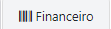
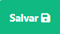
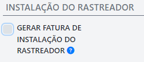
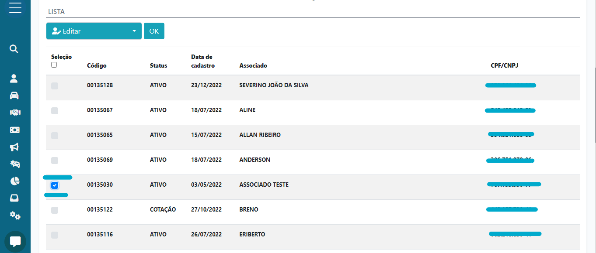
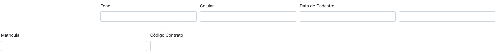

Associado
Cadastrar
- Clicar no botão de menu lateral;

- Escolher a opção: “ASSOCIADOS”;
- Após em "CADASTRAR ASSOCIADOS E VEICULO";
- Após seguir estes passos, uma tela como está se abrirá. Será nela que iremos fazer a inserção dos nossos dados:
- No topo podemos navegar entre os tipos de campos a serem inseridos:
- Dentro da aba "Associado":
- "STATUS ASSOCIADO": dentro desta opção é possível definir um status para o associado a ser cadastrado.
- "PESSOA FÍSICA” e “PESSOA JURÍDICA”: neste local, basta selecionar a opção referente ao tipo do cliente.
- “CEP”: ao inserir um CEP válido, o sistema irá auto completar os campos “ESTADO”, “CIDADE”, “ENDEREÇO” e “BAIRRO”.
- Dentro da aba "Veículo".
- "STATUS DO VEÍCULO": neste local, será definido um status para o Veículo. (O status "ATIVO" vem definido por padrão.)
- "PLACA": neste campo, deve ser inserido o número da placa, sem a adição de nenhum símbolo (-).
Após inserir o valor, basta clicar no botão ao lado, com isso, se abrirá uma janela com vários modelos de veículos para que se escolha o modelo correto.
Assim o sistema trará algumas informações referentes ao veiculo de forma automática, como:
"CHASSI", "CILINDRADA", "MOTOR", "MODELO", "MONTADORA/MARCA", "TIPO DE VEICULO", "ANO FÁBRICA" e "ANO MODELO".
(Contudo pode ocorrer do sistema não encontrar esses dados de forma automática, caso ocorra deve-se inserir os dados faltantes manualmente.) - "CATEGORIA VEÍCULO": neste campo por padrão alguns tipos de categoria já vêm cadastrados no sistema.
Caso a Associação deseje adicionar mais tipos, basta seguir o link: //CADASTRAR CATEGORIA VEICULO//. - "TIPO VEICULO": assim como no anterior, alguns tipos já vêm predefinidos por padrão no sistema.
Caso a Associação deseje adicionar mais tipos, basta seguir o link: //CADASTRAR TIPO VEICULO//. - "COMBUSTÍVEL": neste campo, alguns tipos de combustível já vêm predefinidos por padrão no sistema.
Caso a Associação deseje adicionar mais tipos, basta seguir o link: //CADASTRAR COMBUSTÍVEL//. "COR": neste campo, a maioria das cores já vêm predefinidos por padrão no sistema.
Caso a Associação deseje adicionar mais tipos, basta seguir o link: //CADASTRAR COR//.
"ACESSÓRIOS": aqui, basta selecionar as opções que condizem com os acessórios inclusos no veículo.
"VINCULAR OUTROS VEÍCULOS: este botão permite que seja vinculado um cavalo. Como por exemplo um "baú de caminhão", que deve ter suas informações introduzidas aqui, pois ele pertence ao veículo adicionado.
Após clicar no botão, um campo com informações parecidas a parte de cadastrar veículo aparecerá.Dentro da Aba "Vistoria".
"ADICIONAR IMAGEM": aqui devem ser anexadas as imagens pertencentes a vistoria do veículo.
Após clicar na opção, será aberto automaticamente o gerenciador de arquivos do sistema, para que seja feita escolha das imagens.
(Os únicos formatos aceitos são: JPG ou JPEG.)"STATUS VEÍCULO": por padrão alguns valores já vem adicionados, mas caso a associação queira adicionar outros personalizados, basta seguir este tutorial //cadastrar status veiculo//
"CONSULTOR RESPONSÁVEL": para que apareçam consultores, é necessário fazer o cadastro de cada um. Para isso, basta seguir este tutorial //cadastrar consultor//
"CHECK LISTA": será neste local onde serão relatadas as condições presentes em cada parte específica do veículo. Por padrão o sistema já possui alguns locais de check já predefinidos por padrão, caso haja a necessidade de criar novos checks personalizados, basta seguir o link: //criar check//
Contudo os tipos de check necessitam de argumentos de avaliação. Esses termos são usados para informar uma nota para avaliar a forma que a parte específica está. Por padrão o sistema já traz embarcado algumas avaliações (bom, ruim, fraco...), porém é possível a criação personalizada de atributos para avaliação, para o tutorial basta seguir o link: //criar nota avaliação//- Dentro da aba "Documentos":
Aqui como em todos os campos de inserção de imagem dentro do SAPV, serão aceitas apenas imagens no formato JPG ou JPEG. Caso tente inserir outro formato além dos informados anteriormente, o sistema mostrará um erro e não será possível salvar as imagens. Neste local iremos inserir os "documentos do cliente"(identidade, contrato, CNH...), e depois "documentos do veiculo"(licenciamento, documento do veiculo, contrato...) Caso tenha dúvida sobre a forma que se deve enviar imagens, basta seguir o tutorial: //inserir imagens//.
- Dentro da aba "Contrato":
"ASSOCIAÇÃO": neste campo iremos selecionar a associação desejada que será atribuída ao veiculo. Para cadastrar a Associação basta seguir o link: //cadastrar associação//
"REGIÃO": onde iremos adicionar a região referente ao veiculo. Para o tutorial de cadastro basta seguir o link: //cadastrar região
"CONSULTOR": onde iremos selecionar o consultor responsável pelo veículo. Para o tutorial de cadastrar um novo Consultor basta seguir o link: //Cadastrar Consultor
"NUMERO DA MATRICULA MANUAL": este campo é preenchido automaticamente pelo sistema, mas caso haja a necessidade de inserir um valor personalizado de forma manual.
"PERMISSÃO DE ACESSO AOS CONTRATOS": nesta parte iremos dar permissão aos contratos selecionados, sendo assim ele poderá ver los através do aplicativo ou do sistema, caso ele tenha acesso liberado para isso.
Após tocar no botão, se abrirá uma janela com a lista de contratos disponíveis.- Dentro da Aba "Financeiro": 
- "CADASTRAR FATURAS": com a ativação desta função o sistema irá gerar de forma automática as faturas para o veiculo.
- "E-MAIL DE BEM VINDO": essa será uma mensagem configurada pela associação, para que o novo associado receba na sua caixa de e-mail, após contratar o serviço. Para cadastrar um E-mail de Boas Vindas, basta seguir o link: //cadastro email de boas vindas//.
- "LEMBRETE DE PAGAMENTO": será uma mensagem também configurada e personalizada pela associação, contendo o link de pagamento da fatura. Tutorial para cadastrar lembrete de pagamento//cadastro lembrete de pagamento//.
- "VALOR FIPE": o campo será autopreenchido com valor atualizado mensalmente pela FIPE.
- "COTA": este campo será autopreenchido caso tenha sido marcada a opção "Selecionar cota pelo valor da FIPE" dentro da aba de Veículo.
"FORMA DE RECEBIMENTO": neste campo iremos selecionar a forma pela qual a associação irá receber o pagamento das faturas. Tutorial para cadastrar forma de recebimento, link: //criar nova forma de recebimento//
- "DIA DE VENCIMENTO": o dia do mês em que o associado irá optar por ser o vencimento de sua fatura.
- "VALOR DA COTA": autopreenchido após selecionar a cota desejada.
- Campos de Desconto: aqui é possível dar desconto usando o valor em porcentagem (% DESC) e em reais (R$ DESC).
- Campo para Acréscimo: é possível acrescentar um valor a mais em reais dentro de (RS ACRES).
- "LISTA BENEFÍCIOS DO PLANO"
- "LISTA BENEFÍCIOS AVULSOS"
- "VALOR DO CONTRATO": aqui mostrará a somatória total dos valores.
- "GRUPO": completar....
- "SUBGRUPO": completar...
- "ADESÃO"
- "VALOR DA ADESÃO": onde será mostrado o valor total da adesão.
- "DATA DE VENCIMENTO": onde poderá se escolhida a data de vencimento do boleto de adesão.
- "DATA DE PAGAMENTO": onde poderá ser escolhida a data de pagamento do boleto de adesão.
- "CONTA": onde poderá se escolher a conta onde será recebido o valor de adesão.
"VALOR DA ADESÃO": onde será mostrado o valor total da instalação do rastreador.
"DATA DE VENCIMENTO": onde poderá se escolhida a data de vencimento do boleto de instalação de rastreador.
"DATA DE PAGAMENTO": onde poderá ser escolhida a data de pagamento do boleto de instalação de rastreador.
"CONTA": onde poderá se escolher a conta onde será recebido o valor de instalação de rastreador.
- Para gerar de forma manual:
- Para gerar de forma manual:
Para excluir uma fatura:

Ao selecionar está opção, a fatura que está ao fundo do ícone será excluída."VENCIMENTO": a data de vencimento dos boletos do carnê.
"VALOR": o valor de cada boleto.
"PAGO":
Selecionando esta opção, significa que o boleto já está quitado.
"DATA PAGAMENTO": caso a opção "PAGO" tenha sido marcada, deve se preencher com a data do pagamento.
"VALOR PAGO": o valor pago do boleto.
"CONTA": a conta que irá receber o pagamento das faturas.
Para finalizar, basta clicar no botão "SALVAR".

Aqui será onde preenchemos os campos, com informações referentes ao associado. Bastando apenas preencher os campos com as informações correspondentes.
Contudo, alguns campos merecem mais atenção. Como por exemplo:
(O status "ATIVO" vem definido por padrão.)
(Em alguns casos pode ocorrer a necessidade de introduzi los de forma manual).
Esta seção pode ser preenchida depois, basta seguir esse tutorial: //tutorial vistoria//.
Caso deseje preencher, agora deve se atentar a essas informações:
Na primeira parte da aba:
(A opção já vem marcada por padrão).
Com essa opção marcada anteriormente, os sistema trará de forma automática uma cota que mais se enquadra as características e valor do veículo. Contudo mesmo com a opção marcada, é possível ainda escolher a cota de forma manual. Tutorial para criar cota, link: //criar cota//
Neste local ficarão para visualização todos os benefícios que o plano de cotas contém incluso, sem valor adicional.
Tutorial para cadastrar benefícios de Cotas, link: //cadastrar benefícios cotas//
Nesta tabela irá aparecer todas os planos opcionais e avulsos que o associado poderá escolher, contudo é acrescentado valor do beneficio, junto ao valor da cota.
Tutorial para criar beneficio avulso, link: //criar beneficio avulso//
Aqui ficará o total do valor da "COTA", "BENEFÍCIOS AVULSOS", "PERCENTUAL DA FIPE", "ADESÃO", "INSTALAÇÃO DO RASTREADOR".
Em baixo temos:
Ao marcar a opção "Gerar Fatura de Adesão":
Irão aparecer mais campos como estes:
"INSTALAÇÃO DO RASTREADOR"
Ao marcar a opção "Gerar Fatura de Instalação de Rastreador":
Irão aparecer mais campos como estes:
"PARCELAS NO BOLETO"
Caso a opção "CADASTRAR FATURAS", tenha sido selecionada:
Esta janela chamada "PARCELAS NO BOLETO", irá aparecer:
Será aqui onde iremos cadastrar todas as faturas do carnê. Podemos gerar las de forma manual ou de forma automática gerando 12 parcelas de uma só vez.
Aqui basta clicar no botão para quantas faturas queremos, sabendo que já temos uma adicionada automaticamente.
Ao selecionar está opção, serão geradas 12 parcelas de forma automática.
Editar e Consultar
- Clicar no botão de menu lateral;
- Escolher a opção: “ASSOCIADOS”;
- Após em "EDITAR/CONSULTAR ASSOCIADO";
- Nesta tela, podemos consultar editar os associados cadastrados na Associação.
- Para executar uma ação aqui dentro, basta selecionar o usuário, clicando na caixa de seleção ao lado:

Contudo, também é possível escolher todos os usuários de uma só vez, para isso, basta selecionar a opção "SELEÇÃO":
- Após ter escolhido o usuário ou usuários desejados, agora deveremos escolher qual será o tipo de ação que iremos executar:
- Editar;
- Consultar;
- Apagar.
Usando o "acesso rápido":
Podemos escolher qual tipo de ação iremos executar, em "Tipo de Acesso":
Aqui será necessário preencher ao menos um dos próximos campos:
Contudo, após inserir um dado para filtrar é necessário selecionar o Associado a ser escolhido:
Após basta clicar em "Acesso", para acessar.
Caso tenha escolhido a opção "Editar". Uma tela como está aparecerá contendo todos os dados do associado, permitindo a alteração das informações.
Mas se escolheu a opção "Consultar". Uma tela como está aparecerá, mesmo sendo parecida com a de "Editar", aqui só é possível visualizar as informações.
Usando o "Buscar":

Temos a opção de filtrar pelo o status do associado. Usando a opção "Status do Associado".
Após clicar, algumas opções irão aparecer:
Depois, basta preencher algum dos próximos campos:
E para confirmar, basta clicar no botão "Buscar":
Caso tenha inserido algum dado errado, basta clicar no botão "Limpar".
Após buscar, uma listagem dos usuários será mostrada mais em baixo.
Caso ao fazer a pesquisa, tenha inserido algum dado errado ou mesmo se queira limpar, basta clicar no botão "Limpar".
Nesta lista, será possível executar algumas ações referentes ao usuário.
Será possível:
Para que essas opções apareçam, devemos clicar no botão:
Para que as opções apareçam:
Depois de escolher basta selecionar a opção desejada, e selecionar "OK":
Caso seja selecionada a opção "Editar", uma tela como está será mostrada:
Este local é bem parecido com a parte de cadastro de veiculo, a diferença é que aqui é possível modificar os dados inseridos.
Caso seja selecionada a opção "Consultor", uma tela como está será mostrada:
Neste local, é possível consultar as informações do associado. (Mesmo que essa tela pareça a de editar, aqui não é possível fazer isso.)
Caso seja selecionada a opção "Apagar", uma janela de confirmação como essa irá aparecer:
Basta confirmar clicando em "OK" ou cancelar em "CANCELAR".